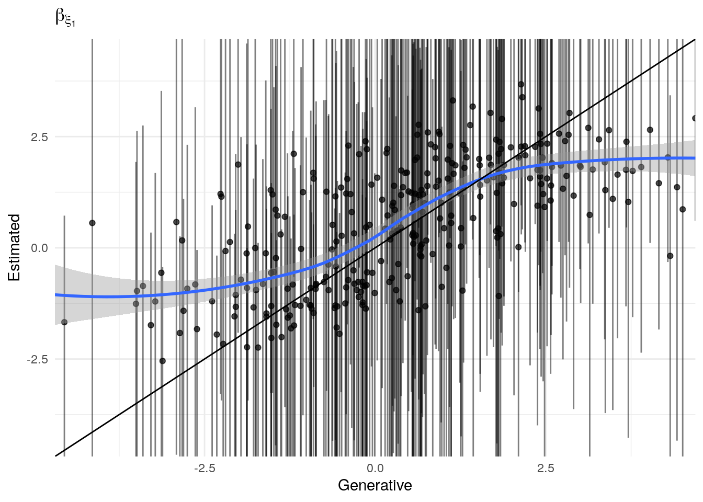

Test Simulated Data
John Flournoy
2018-05-18
test-simulated-data.RmdAim 1a: Does framing reinforcement learning with (mate-seeking and status) motivational contexts sensitize the learner and potentiate learning?
My approach to answering this question is to model how learning occurs in each of the three motive contexts and examine differences in how learning occurs.
A model for reinforcement learning
In the context of this task, where the relation between the optimal response and the stimulus is constant, a simple model of the degree of learning could rely on a simple proportion of optimal responses \(P_{ok}\) for each condition \(k\). The test of the hypothesis of the effect of framing would then be the difference between conditions in \(P_o\). This simple model sacrifice precision for simplicity, and so I will be modeling the data using a reinforcement learning model with several parameters that can account for deviations from a strict Rescorla-Wagner (RW) process. This increases the number of possible comparisons I am able to make between conditions, which may generate useful information about how motive-domain framing affects the learning process (as modeled, of course), but which also increases the complexity of patterns between conditions and parameters that must be interpreted. It will be helpful to keep in mind that the framing can only be said to potentiate learning if, regardless of its affect on any model parameters, it does not result in higher proportions of optimal responding.
In this section, I simulate data as expected under the Rescorla-Wagner model implemented by Ahn, Haines, & Zhang (2017) in their go-no-go model 2. Their original model handles binary decisions (button-press or no button-press) in response to four different cues. However, the form of the learning algorithm is generalizable to other binary choices in response to cues. In the case of the Social Probabilistic Learning Task (SPLT), participants are presented with a face (the cue), and must decide to press the left key or the right key. They are rewarded probabilistically such that for each cue, one or the other of the response options has an 80% chance of providing reinforcement. The go-no-go models used by Ahn et al. (2017) were derived from work by Guitart-Masip et al. (2012). Their most flexible reinforcement learning model generates the probability of an action for each trial via N parameters: the learning rate, \(\epsilon\), the effective size of reinforcement, \(\rho\), a static bias parameter, \(b\), an irreducible noise parameter, \(\xi\), and a Pavlovian learning parameter, \(\pi\). In the SPLT, trial feedback does not vary by valence (responses result in reward, or no reward, but never punishment), so I use the model that does not include this Pavlovian component.
Reinforcement learning model for the SPLT
The model for an individual \(j\)’s probability of pressing the right arrow key on trial \(t\) given that stimulus \(s_{t}\) is presented, \(P(a_{\rightarrow t} | s_{t})_{t}\), is determined by a logistic transformation of the action weight for pressing the right arrow key minus the action weight for pressing the left arrow key. This probability is then adjusted by a noise parameter, \(0 \leq\xi_{jk}\leq1\) for each participant \(j\) in condition \(k\). The noise parameter modulates the degree to which responses are non-systematic. When \(\xi\) is 1, \(P_{it} = .5\), and because each individual has a unique noise parameter for each condition, I am able to account for participants who do not learn during the task, or in a particular condition. The full equation is:
\[ P(a_{\rightarrow t} | s_{t})_{t} = \text{logit}^{-1}\big(W(a_{\rightarrow t}| s_{t}) - W(a_{\leftarrow t}| s_{t})\big)\cdot(1-\xi_{jk}) + \small\frac{\xi_{jk}}{2}. \]
The action weight is determined by a Rescorla-Wagner (RW) updating equation and individual \(j\)’s bias parameter, \(b_{jk}\), for that condition (which encodes a systematic preference for choosing the left or right response option). In each condition, the same two words are displayed in the same position, so \(b\) encodes a learning-independent preference for one particular word or position. The equation for the action weight for each action on a particular trial is:
\[ W_{t}(a,s) = \left\{ \begin{array}{ll} Q_{t}(a, s) + b_{jk}, & \text{if } a=a_{\rightarrow} \\ Q_{t}(a, s), & \text{otherwise} \end{array} \right. \] Finally, the RW updating equation that encodes instrumental learning is governed by the individual’s learning rate for that condition, \(\epsilon_{jk}\), and a scaling parameter \(\rho_{jk}\) governing the effective size of the possible rewards \(r_t \in \{0, 1, 5\}\):
\[ Q_{t}(a_t, s_t) = Q_{t-1}(a_t, s_t) + \epsilon_{jk}\big(\rho_{jk}r_t - Q_{t-1}(a_t, s_t)\big) \]
Hierarchical Parameters
Each parameter (\(\epsilon, \rho, b, \xi\)) varies by condition \(k \in 1:K\), and by participant \(j \in 1:J\) nested in sample \(m \in 1:M\). The structure of the hierarchical part of the model is the same for each parameter, so the following description for \(\epsilon\) will serve as a description for all of the parameters. For each individual \(j\), \(\beta_{\epsilon j}\) is a \(K\)-element row of coefficients for parameter \(\epsilon\) for each condition:
\[ \beta_{\epsilon j} \sim \mathcal{N}(\delta_{\epsilon mm[j]}, \Sigma_{\epsilon}) \] where \(\delta_{\epsilon mm[j]}\) is a column of \(K\) means for individual \(j\)’s sample \(M\), as indexed in the vector \(mm\), and \(\Sigma_{\epsilon}\) is a \(K\times K\) matrix of the covariance of individual coefficients between conditions.
Finally, across all \(M\) samples, the means for each condition k are distributed such that:
\[ \delta_{\epsilon k} \sim \mathcal{N}(\mu_{\epsilon k}, \sigma_\epsilon) \]
where \(\mu_{\epsilon k}\) is the population mean for parameter \(\epsilon\) in condition \(k\), and \(\sigma\) is a slightly regularizing scale parameter for these means across all conditions and samples. The priors for these final parameters are:
\[ \mu_\epsilon \sim \mathcal{N}(0, 5)\\ \sigma_\epsilon \sim \text{exponential(1)}. \]
Simulating data
Before modeling the task data, I will confirm that this model can recover known parameters from simulated data. I simulate data based on the structure of the sample data, using the same number of participants per sample (see the section on descriptive statistics, as well as precisely the same task structure. For this aim, it is important to be able to recover all \(\mu_{\theta k}\) for \(\theta \in \{\epsilon,\rho,b,\xi\}\) and \(k \in \{1,2,3\}\), where 1 = Hungry/Thirsty, 2 = Popular/Unpopular, and 3 = Dating/Looking. Those parameters that account for idiosyncratic deviation from RW-expected behavior (\(b,\xi\)) will not vary by condition. Based on interactive simulation (here), reasonable parameter values for the control condition might be \(\mu_\epsilon = -1.65\) and \(\mu_\rho = -0.3\).1
The probly package contains functions that help generate sample- and individually-varying coefficients for parameters, as well as simulated data from task structure.
One early indication that a model may not be well suited to a problem is that when generating from the prior distribution, datasets are produced that either do not adequately cover the range of reasonable values, or that cover ranges that are implausible (Gabry, Simpson, Vehtari, Betancourt, & Gelman, 2017). The simulated data do generally cover the range of the actual data when we look just at the proportion of optimal presses over time (Figure 1, and importantly do not show implausible behavior (all mass around extreme values like 0, 1, or .5).

Figure 1: Simulated task data. This shows the the proportion of optimal presses across all participants for each trial, collapsed over simulations. It’s possible to see that trial-by-trial probability of choosing the optimal resonses, averaged across all participants, spans the full range of possible behavior (with the extreme exception that no simulation evinces all participants performing perfectly).

Figure 2: Simulated task data. This shows the the proportion of optimal presses across all participants for each trial. The best-fit line is a generalized additive model smooth and is only intended to give a rough sense of trends over trials. Each panel is one from 400 simulated data sets. The red line indicates random responding.

Figure 3: Priors, with \(epsilon\) and \(\xi\) on their transformed scales. Notice the very long tails for the individually varying \(rho\) parameters (beta_rho).
Figure 3: Priors, with \(epsilon\) and \(\xi\) on their transformed scales. Notice the very long tails for the individually varying \(rho\) parameters (beta_rho).

Figure 3: Priors, with \(epsilon\) and \(\xi\) on their transformed scales. Notice the very long tails for the individually varying \(rho\) parameters (beta_rho).

Figure 3: Priors, with \(epsilon\) and \(\xi\) on their transformed scales. Notice the very long tails for the individually varying \(rho\) parameters (beta_rho).
Figure 3: Priors, with \(epsilon\) and \(\xi\) on their transformed scales. Notice the very long tails for the individually varying \(rho\) parameters (beta_rho).

Figure 3: Priors, with \(epsilon\) and \(\xi\) on their transformed scales. Notice the very long tails for the individually varying \(rho\) parameters (beta_rho).
Figure 3: Priors, with \(epsilon\) and \(\xi\) on their transformed scales. Notice the very long tails for the individually varying \(rho\) parameters (beta_rho).
Figure 3: Priors, with \(epsilon\) and \(\xi\) on their transformed scales. Notice the very long tails for the individually varying \(rho\) parameters (beta_rho).
Figure 3: Priors, with \(epsilon\) and \(\xi\) on their transformed scales. Notice the very long tails for the individually varying \(rho\) parameters (beta_rho).

Figure 3: Priors, with \(epsilon\) and \(\xi\) on their transformed scales. Notice the very long tails for the individually varying \(rho\) parameters (beta_rho).

Recovery of population parameters
The model as described above was fit to simulated data using RStan (version 2.17.3; Stan Development Team, 2018), sampling from 4 chains with 1000 warmup iterations and 500 sampling iterations per chain. The posterior means for each parameter are compared to those that generated the simulated task behavior. The plots in Figure ?? allow visual comparison of the fitted model posteriors for each parameter to the data-generating population means, as well as to the means of the data-generating parameters for each sample, and for each individual. It is clear from these plots that the parameter estimates from this particular run capture the generating parameters, with two exceptions. First, the estimate of the population mean of the irrudicble noise parameter, \(\xi\), for one condition did not capture the generating parameter. This may be because this parameter was intentionally set very low so that \(\xi^\prime \approx 0\). The second instance occurs with the bias parameter for one condition. This may be acceptable because the parameters of interest safely capture the generating values, and this single condition bias parameter is not very far from the identity line. Additionally, it should be noted that the fitted model does capture the mean of generating \(\delta_b\) and \(\beta_b\) parameters for all conditions.


Fitting to many simulations
After generating 100 simulated data sets, models were fit to each. The empirical cummulative density function was composed to each posterior distribution for each parameter, and the generating value (from the simulation) was located within that density. If the posterior is a reasonable estimate of the generating parameter, then the generating parameter should be a random draw from that posterior. As such, the distribution of the “p-value” of the generating parameters (in relation to the posteriors) should be uniform. Below you are demonstrations of adherence to or departure from this.
#####TEST
mod <- 1
test_sim_num <- 1
#####
library(future)
library(future.batchtools)
library(probly)
library(listenv)
library(rstan)
if(grepl('(^n\\d|talapas-ln1)', system('hostname', intern = T))){
simiter <- 100 #number of sims we have already generated.
niter <- 2000
nchains <- 6
niterperchain <- ceiling(niter/nchains)
warmup <- 1000
data_dir <- '/gpfs/projects/dsnlab/flournoy/data/splt/probly'
plan(batchtools_slurm,
template = system.file('batchtools', 'batchtools.slurm.tmpl', package = 'probly'),
resources = list(ncpus = nchains, walltime = 60*24*4, memory = '1G',
partitions = 'long,longfat'))
} else {
simiter <- 2 #number of sims we have already generated.
data_dir <- '/data/jflournoy/split/probly'
niter <- 40
nchains <- 4
warmup <- 10
niterperchain <- ceiling(niter/nchains)
plan(tweak(multiprocess, gc = T, workers = nchains))
}
if(!file.exists(data_dir)){
stop('Data directory "', data_dir, '" does not exist')
} else {
message("Data goes here: ", data_dir)
}
model_filename_list <- list(
# rl_2_level = system.file('stan', 'splt_rl_2_level.stan', package = 'probly'),
rl_2_level_no_b_2 = list(
sim_test_fn = file.path(data_dir, 'splt_sim2_test_sims.RDS'),
stan_model_fn = system.file('stan', 'splt_rl_2_level_no_b_2.stan', package = 'probly'))
# rl_repar_exp = system.file('stan', 'splt_rl_reparam_exp.stan', package = 'probly'),
# rl_repar_exp_no_b = system.file('stan', 'splt_rl_reparam_exp_no_b.stan', package = 'probly')
)
source(system.file('r_aux', 'load_data_for_sim.R', package = 'probly'))
condition_mat[is.na(condition_mat)] <- -1
outcome_arr[is.na(outcome_arr)] <- -1
outcome_dummy <- matrix(rep(-1, N*max(Tsubj)), nrow = N)
outcome_l <- outcome_arr[,,1]
outcome_r <- outcome_arr[,,2]
press_right_dummy <- matrix(rep(-1, N*max(Tsubj)), nrow = N)
cue_mat[is.na(cue_mat)] <- -1
J_pred <- 0
Xj <- matrix(0,nrow=N,ncol=0)
stan_sim_data <- list(
N = N,
`T` = max(Tsubj),
K = K,
ncue = max(cue_mat, na.rm = T),
Tsubj = Tsubj,
condition = condition_mat,
outcome = outcome_dummy,
outcome_r = outcome_r,
outcome_l = outcome_l,
press_right = press_right_dummy,
cue = cue_mat,
# J_pred = J_pred,
# Xj = Xj,
run_estimation = 0
)
message('Loading simulated data from: ', model_filename_list[[mod]]$sim_test_fn)
mu_tau_parlist <- c('mu_delta_ep', 'mu_delta_rho', 'mu_delta_xi', 'tau_ep', 'tau_rho', 'tau_xi')
beta_parlist <- c('beta_ep_prm', 'beta_rho_prm', 'beta_xi_prm')
sim_data <- readRDS(model_filename_list[[1]]$sim_test_fn) #load data
#for later comparison
true_pars <- rstan::extract(sim_data, pars = c(mu_tau_parlist, beta_parlist))
#get the predicted right presses from simulation
#seems like we shouldn't do this for each sim, but it's a very small
#amount of the total time (the sampling takes much longer)
pright_pred_samps <- rstan::extract(sim_data, pars = 'pright_pred')[[1]]
list_of_pright_pred_mats <- lapply(1:dim(pright_pred_samps)[1], function(i) pright_pred_samps[i,,])
#done extracting from simulations. rm and gc
rm(sim_data)
gc(verbose = T)
results_f <- listenv()
for(mod in seq_along(model_filename_list)){
print(paste0('Fitting to simulated data from: ', names(model_filename_list)[mod]))
for(test_sim_num in 1:simiter){
results_f[[test_sim_num]] %<-% {
library(rstan)
message('Fitting simulated data for iter: ', test_sim_num)
press_right_sim_mat <- list_of_pright_pred_mats[[test_sim_num]]
this_sim_outcome <- outcome_dummy
this_sim_outcome[press_right_sim_mat == 1] <- outcome_r[press_right_sim_mat == 1]
this_sim_outcome[press_right_sim_mat == 0] <- outcome_l[press_right_sim_mat == 0]
stan_sim_data_to_fit <- stan_sim_data
stan_sim_data_to_fit$outcome <- this_sim_outcome
stan_sim_data_to_fit$press_right <- press_right_sim_mat
stan_sim_data_to_fit$run_estimation <- 1
model_cpl <- rstan::stan_model(model_filename_list[[mod]]$stan_model_fn)
afit <- rstan::sampling(
model_cpl,
data = stan_sim_data_to_fit,
chains = nchains, cores = nchains,
iter = warmup + niterperchain, warmup = warmup,
include = TRUE,
pars = c(mu_tau_parlist, beta_parlist),
control = list(max_treedepth = 15, adapt_delta = 0.99))
mu_tau_ecdf_quantiles <- lapply(mu_tau_parlist, function(par){
true_par <- true_pars[[par]]
estimated_par <- rstan::extract(afit, pars = par)[[1]]
if(length(dim(true_par)) == 3) {
true_par <- true_par[test_sim_num,1,]
estimated_par <- estimated_par[,1,]
} else {
true_par <- true_par[test_sim_num,]
}
true_par_ecdf_quantile <- lapply(1:length(true_par), function(i){
ecdf(estimated_par[,i])(true_par[i])
})
})
names(mu_tau_ecdf_quantiles) <- mu_tau_parlist
beta_ecdf_quantiles <- lapply(beta_parlist, function(par){
true_par <- true_pars[[par]][test_sim_num,,]
estimated_par <- rstan::extract(afit, pars = par)[[1]]
param_grid <- expand.grid(i = 1:(dim(true_par)[1]), k = 1:(dim(true_par)[2]))
true_par_ecdf_quantile <- lapply(1:dim(param_grid)[1], function(i){
ecdf(estimated_par[,param_grid[i,1], param_grid[i,2]])(true_par[param_grid[i,1], param_grid[i,2]])
})
param_grid$ecdf_quantile <- unlist(true_par_ecdf_quantile)
param_grid
})
names(beta_ecdf_quantiles) <- beta_parlist
true_par_quantiles <- list(mu_tau_ecdf_quantiles = mu_tau_ecdf_quantiles,
beta_ecdf_quantiles = beta_ecdf_quantiles)
saveRDS(true_par_quantiles,
file.path(data_dir,
paste0('splt-sim_ecdf_check-', names(model_filename_list)[mod],
'-', round(as.numeric(Sys.time())/1000,0),'.RDS')))
true_par_quantiles
}
}
}
results <- lapply(as.list(results_f), future::value)
saveRDS(results, file.path(data_dir, 'splt_ecdf_test_rez.RDS'))
| param | p_in_outer_5 | p_in_inner_95 | N | pse | p_in_outer_5_l | p_in_outer_5_u | ks.D | ks.p |
|---|---|---|---|---|---|---|---|---|
| mu_delta_ep | 0.097 | 0.903 | 72 | 0.035 | 0.027 | 0.167 | 0.052 | 0.987 |
| mu_delta_rho | 0.097 | 0.903 | 72 | 0.035 | 0.027 | 0.167 | 0.089 | 0.583 |
| mu_delta_xi | 0.028 | 0.972 | 72 | 0.019 | -0.011 | 0.067 | 0.057 | 0.969 |
| tau_ep | 0.083 | 0.917 | 72 | 0.033 | 0.018 | 0.148 | 0.086 | 0.633 |
| tau_rho | 0.056 | 0.944 | 72 | 0.027 | 0.002 | 0.110 | 0.092 | 0.545 |
| tau_xi | 0.042 | 0.958 | 72 | 0.024 | -0.005 | 0.089 | 0.128 | 0.174 |
| param_name | k | p_in_outer_5 | p_in_inner_95 | N | pse | p_in_outer_5_l | p_in_outer_5_u | ks.D | ks.p |
|---|---|---|---|---|---|---|---|---|---|
| beta_ep_prm | 1 | 0.058 | 0.942 | 7392 | 0.003 | 0.053 | 0.064 | 0.006 | 1.000 |
| beta_ep_prm | 2 | 0.087 | 0.913 | 7392 | 0.003 | 0.080 | 0.093 | 0.011 | 0.964 |
| beta_ep_prm | 3 | 0.058 | 0.942 | 7392 | 0.003 | 0.053 | 0.064 | 0.005 | 1.000 |
| beta_rho_prm | 1 | 0.043 | 0.957 | 7392 | 0.002 | 0.038 | 0.048 | 0.003 | 1.000 |
| beta_rho_prm | 2 | 0.048 | 0.952 | 7392 | 0.002 | 0.043 | 0.053 | 0.004 | 1.000 |
| beta_rho_prm | 3 | 0.052 | 0.948 | 7392 | 0.003 | 0.047 | 0.057 | 0.005 | 1.000 |
| beta_xi_prm | 1 | 0.048 | 0.952 | 7392 | 0.002 | 0.043 | 0.053 | 0.004 | 1.000 |
| beta_xi_prm | 2 | 0.053 | 0.947 | 7392 | 0.003 | 0.048 | 0.058 | 0.006 | 1.000 |
| beta_xi_prm | 3 | 0.093 | 0.907 | 7392 | 0.003 | 0.086 | 0.099 | 0.003 | 1.000 |
Conclusion
The model is able to recover data generating parameters from simulated data and is safe to use in interpretting the data provided by the study participants.
References
Ahn, W.-Y., Haines, N., & Zhang, L. (2017). Revealing Neurocomputational Mechanisms of Reinforcement Learning and Decision-Making With the hBayesDM Package. Computational Psychiatry, 1, 24–57. doi:10.1162/CPSY_a_00002
Gabry, J., Simpson, D., Vehtari, A., Betancourt, M., & Gelman, A. (2017). Visualization in Bayesian workflow. Retrieved from http://arxiv.org/abs/1709.01449
Guitart-Masip, M., Huys, Q. J., Fuentemilla, L., Dayan, P., Duzel, E., & Dolan, R. J. (2012). Go and no-go learning in reward and punishment: Interactions between affect and effect. NeuroImage, 62(1), 154–166. doi:10.1016/j.neuroimage.2012.04.024
Stan Development Team. (2018). RStan: The R interface to Stan. Retrieved from http://mc-stan.org/
Note that these are the raw parameter values which are transformed such that \(\epsilon^\prime \in [0,1]\) and \(\rho^\prime \in [0,\infty)\). Similar to logistic regression, estimating the parameters on a scale the is not resticted improves estimation.↩